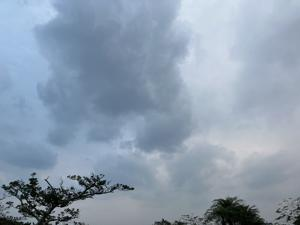
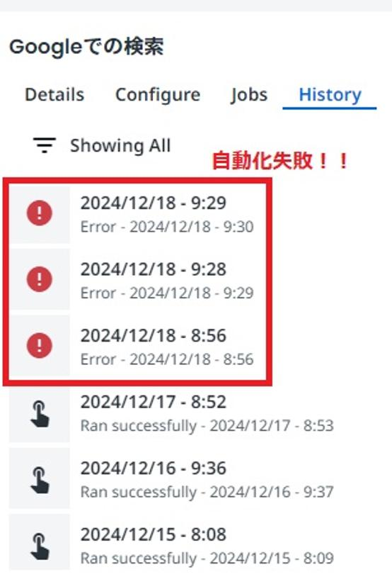
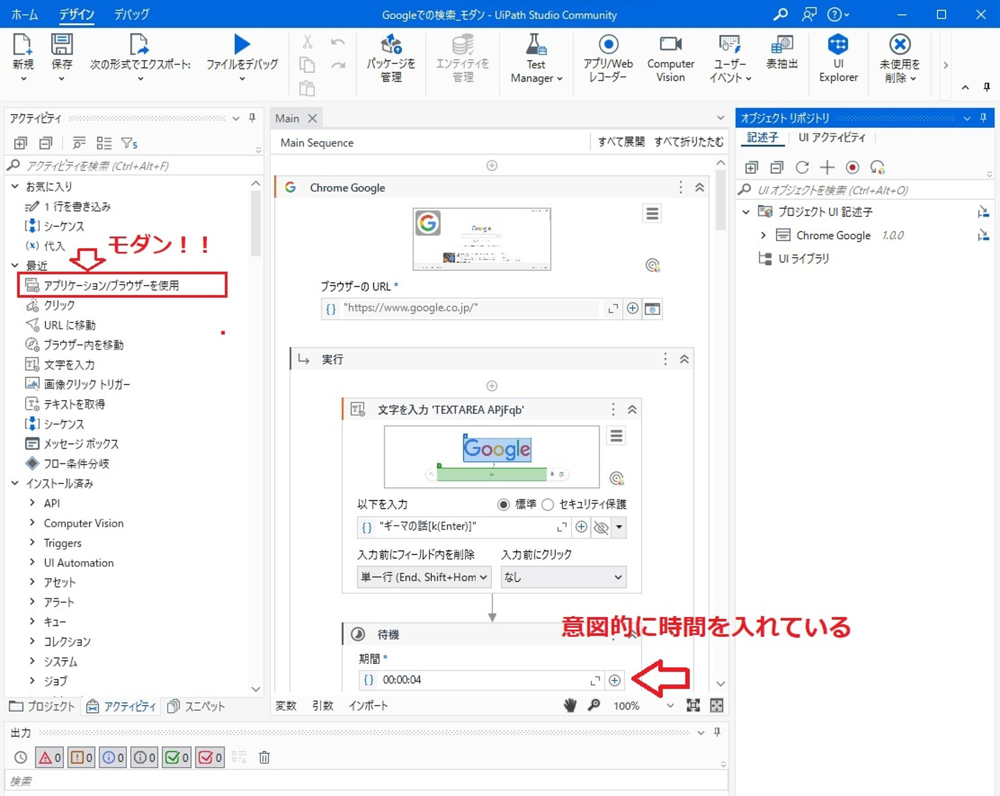

うるがいの話 ある日
最新: UiPath_Studio動かない【うるがいの話 ある日】とは 一日だけのプログです
『うるがいの話』の最新一日だけのプログで、通信料が少なく経済的だ。カニの画像をクリックすると全ての日付が載る『うるがいの話』サイトを表示します
|
|
【うるがいの話】 うるがい(ｳﾙｶﾞｲ urugai)とは、『もずくがに』の名前でとても大きくなります。 |
|---|---|
|
|
【カミマヤーの話】 猫のことを方言でマヤーといいます。カミマヤー（kamimayaa）とは、神の猫のことです。 |
|
【たながぁの音楽】 たながぁ（ﾀﾅｶﾞｰ tanagaa）とは手長えびのことで、何種類かあり大きいのは車 エビぐらいになります。 |

|
【ぶながぁの話】 ぶながぁ(ﾌﾞﾅｶﾞｰ bunagaa)とは、赤い髪の毛、赤い身体、そして身長は１ｍ２０ｃｍ ぐらい、川の蟹を食べているの目撃された。場所は沖縄県国頭郡大宜味村のと ある村僕の隣近所に住んでいる爺さんから、聞いた話です。 |
|
|
【ギーマの話】 ギーマ(giima)とは、山原の里山に咲くスズランに似た、 花を付けます。実は食べられます、 気が付くと口の周りが紫になっています。 |
2025年01月10日 (金）UiPath_Studio動かない
16:07

バージョンアップお知らせが来たので
Studio 2025.0.157に更新したのですがStudioとStudioXの切り替え
ができなくなりました。
開発チームがStudioXで統一しているため困っています。
解決法があれば教えてください。
記事によると「StudioXがStudioに吸収された」ようなので、
「切り替え」という考え自体が間違いだったことがわかりました。
｢便利にする｣ため物事は複雑になり
便利を維持するため手間が増えたりする
最たる物がPC始めとした電子機器ですよね。
自動化した『Googleでの検索』の失敗（これも、画像コピー）

なんってコッタ！、私と一緒だべ。自動化した『Googleでの検索』
が、先月の１２月１８日から失敗するのです。そして、改善すべく年
明けの１月４日から、障害対応に着手する。ところがだ、以前利用し
ていた、
レガシー機能が全く使えなくなっている。モダンでやれ！と
そして、元の動き１００％ではないが、昨日から自動化の運用を行っ
た。自動化のリスクじゃい、と思いながら自動化を使うのである。
一旦なれてしまったら・・・・、実はこのプログの画像の圧縮処理（
そのままのサイズだと、容量が大きすぎでサイトを開くのが遅くなる
）もＰｙｔｈｏｎのプログラムで行っている。ところでウィンドウズ
の画面コピーの場合（今日にプログだとUiPath Studioの画面）、も
ともと画像データサイズが小さくて、一律に圧縮すると解像度が悪く、
手作業でオリジナル画像を再配置する作業を行っていた。
これです、UiPath Studioの画面の画像コピー

そこで、画像データサイズが５０ＫＢ以下の場合は、圧縮しないよう
プログラムを４本訂正した。
アルゴリズムは簡単だが、久々にＰｙｔｈｏｎのプログラムなのでと
惑う。そして、下の動画も動画編集ソフト【Ｐｒｉｍｅｒｅ Ｅｌｅ
ｍｅｎｔｓ９】と【Ｃｌｉｐｃｈａｍｐ】を久しぶり利用した。
一昔前実践できたからと思っても、忘れてしまうし製品も変わってし
まうし・・・。でも、元が好きなことなのでワクワクしながら作業を
している。
ついでなので、画像検索の自動化を動画にしたのを、確かに楽だよ
『UiPath Assistant Google 検索 モダン』（画質わるいけど）
１分２秒
https://youtu.be/qNiiFzMD9xg
お、なぜサイトの検索を毎日行うのか？、検索実績がないと検索サイ
トで一覧表示に載ってこないから、です。